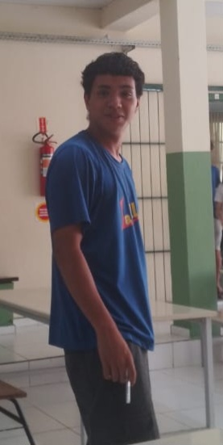

Como os oceanos são afetados?
Aquecimento dos oceanos
+90% do excesso de calor absorvido.
Elevação do nível do mar
+21cm desde 1880.
Acidificação
pH caiu para 8,1 (+26% acidez).
Perda de biodiversidade
Grande Barreira perdeu 50% dos corais.
Números que alertam
Fonte: IPCC, NOAA, relatórios científicos 2023-2025
Gráficos: Temperatura e Acidificação
Aquecimento da superfície oceânica (1880-2025)
Acidificação oceânica (pH médio)
Impactos humanos e econômicos
Comunidades costeiras
40% da população vive perto da costa.
Tempestades intensas
Furacões mais destrutivos.
Pesca em declínio
Migração de estoques pesqueiros.
Migração climática
Milhões de refugiados ambientais.
Soluções para proteger os oceanos
Energias renováveis
Solar, eólica, maremotriz.
Restauração costeira
Manguezais capturam carbono.
Economia circular
Redução de plásticos nos oceanos.
Educação ambiental
Conscientização e ação coletiva.
Simulador: Elevação do nível do mar
Elevação estimada: 0.52 metros
• Miami, Veneza, Daca: inundações frequentes
• Rio de Janeiro, Xangai: alagamentos em áreas baixas
📊 Baseado em projeções do IPCC e Climate Central
👣 Calculadora de Pegada de Carbono
Média mundial: ~4 ton/ano | Meta sustentável: menos de 2 ton/ano
Mapa Mundial: Regiões mais afetadas
Notícias e Artigos Recentes
Nossa equipe

O futuro dos oceanos está nas nossas mãos
Cada fração de grau importa. Reduzir emissões, proteger ecossistemas costeiros e pressionar por políticas climáticas robustas pode salvar milhões de vidas.
Quero ajudar (Greenpeace)